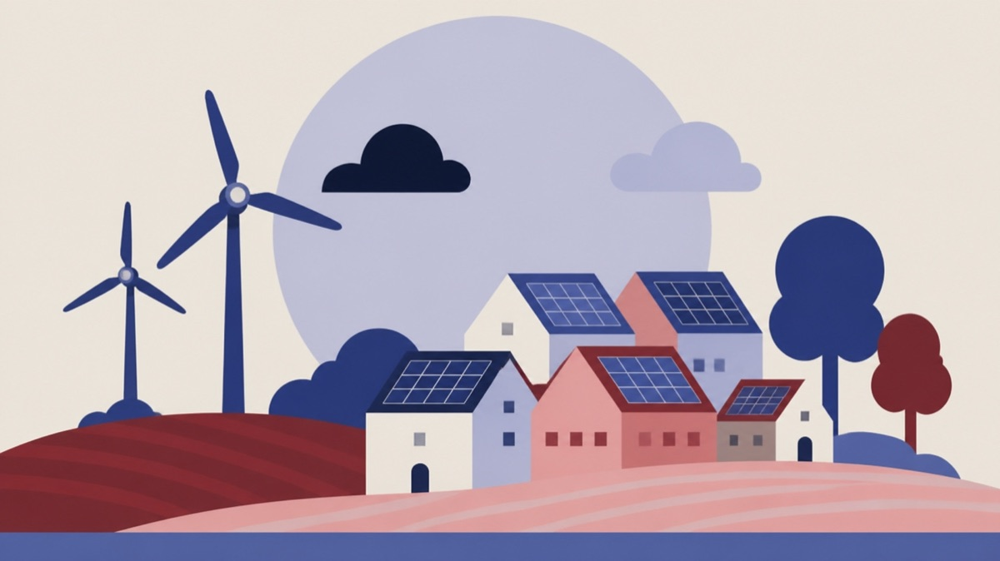

Besluttet 8. september, Udvalget for Klima, Teknik og Miljø, Odsherred
Årshjul

Kort fortalt
- Hvem
- Udvalget for Klima, Teknik og Miljø, Odsherred Kommune
- Hvornår
- Tirsdag 8. september 2026
- Status
- Besluttet. Ad 1: Taget til efterretning med tilføjelse af: Spørgsmål til brug ved besøget på rensningsanlægget i november drøftes under "Meddelelser fra administrationen" på mødet den 6. oktober 2026. Driften af genbrugsstationer sættes på dagsordenen efter besøg på en af kommunens genbrugsstationer. Mikkel Henriksen (N).
Er noget forkert her? Skriv til os
Læs hele sagen Kommunens egen tekst
Sagsfremstilling
Årshjulet er et fast punkt på dagsordenen og opdateres løbende mellem udvalgsmøderne med
sager samt udvalgsaktiviteter.
Årshjulet fremgår af bilag.
Indstilling
Direktøren indstiller til Udvalget for Klima, Teknik og Miljø at:
1. tage årshjulet til efterretning.
Beslutning
Ad 1: Taget til efterretning med tilføjelse af:
Spørgsmål til brug ved besøget på rensningsanlægget i november drøftes under
"Meddelelser fra administrationen" på mødet den 6. oktober 2026.
Driften af genbrugsstationer sættes på dagsordenen efter besøg på en af
kommunens genbrugsstationer.
Fraværende:
Mikkel Henriksen (N)
Kilde: Odsherred Kommune, Udvalget for Klima, Teknik og Miljø, referat fra mødet tirsdag 8. september 2026, punkt 17. Læs den originale sag hos kommunen.